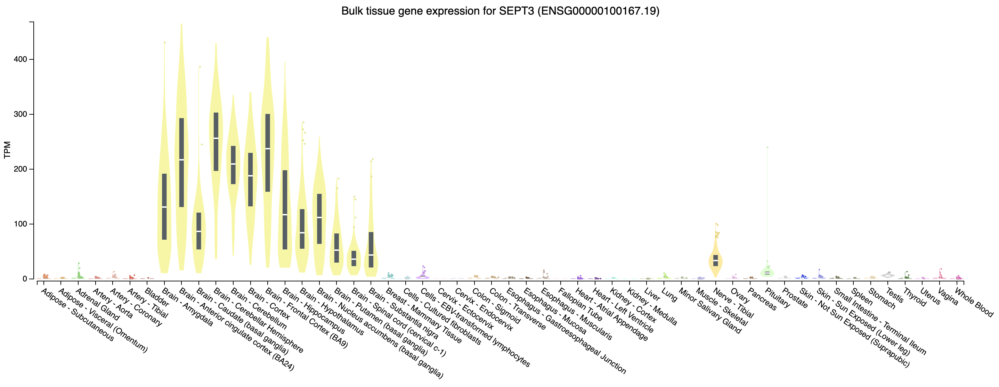
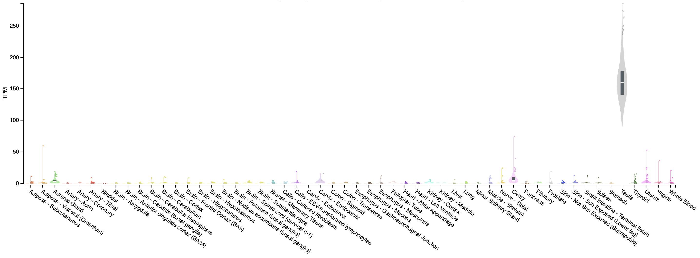
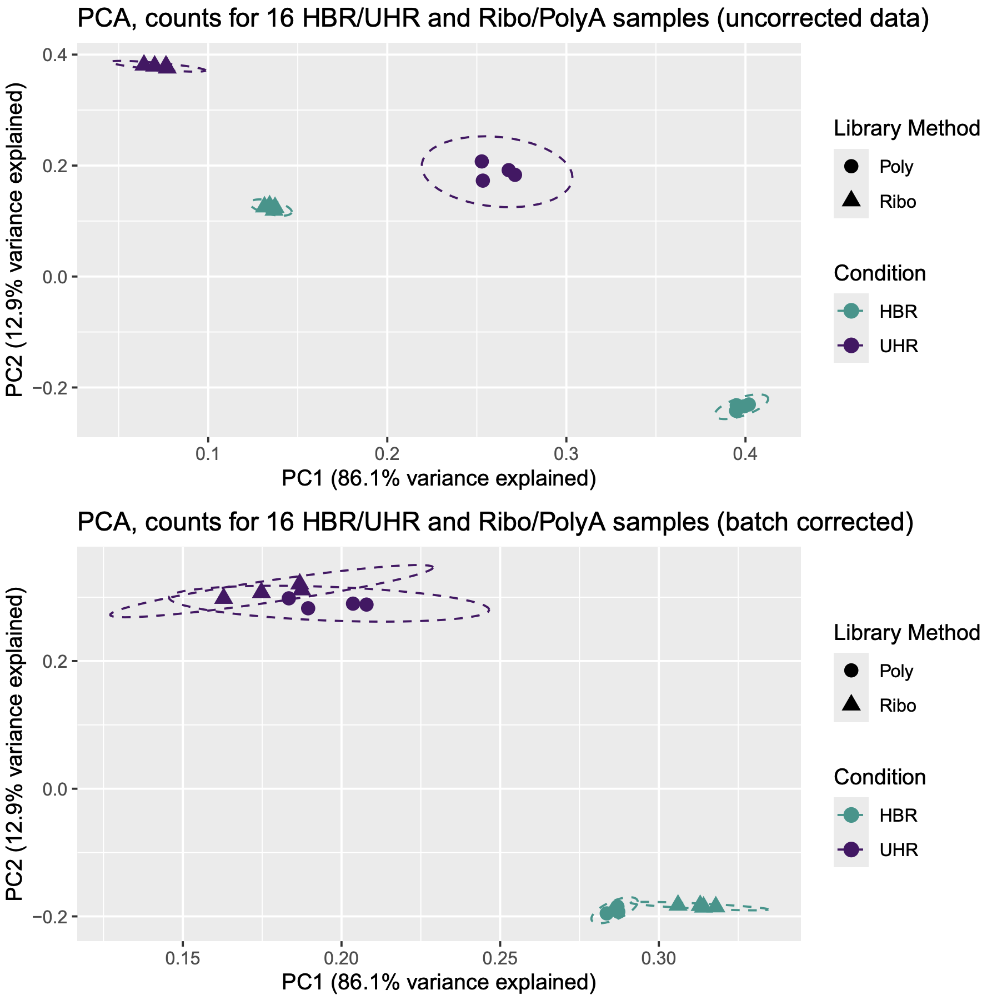
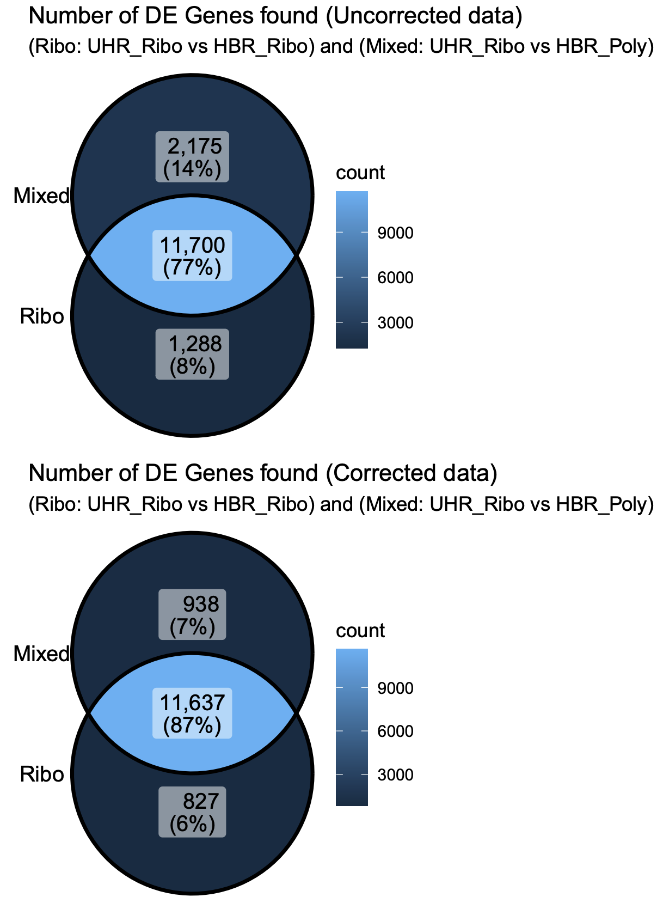
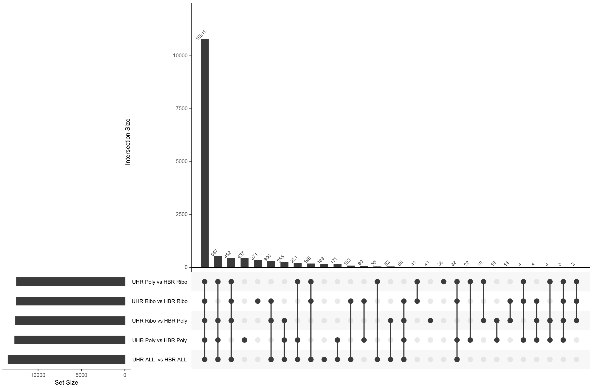

Viewing pairwise sample clustering
It may often be useful to view inter-sample relatedness. In other words, how similar or disimilar samples are to one another overall. While not part of the DESeq2 package, there is a convenient library that can easily construct a hierarchically clustered heatmap from our DESeq2 data. It should be noted that when doing a distance calculation using “raw count” data is not ideal, the count data should be transformed using vst() or rlog() which can be performed directly on the dds object. The reason for this is described in detail in the DESeq2 manuscript, suffice it to say that transforming gene variance to be more homoskedastic will make inferences of sample relatedness more interpretable.
# note that we use rlog because we don't have a large number of genes, for a typical DE experiment with 1000's of genes use the vst() function
rld <- rlog(dds, blind = FALSE)
# view the structure of this object
rld
# compute sample distances (the dist function uses the euclidean distance metric by default)
# in this command we will pull the rlog transformed data ("regularized" log2 transformed, see ?rlog for details) using "assay"
# then we transpose that data using t()
# then we calculate distance values using dist()
# the distance is calculated for each vector of sample gene values, in a pairwise fashion comparing all samples
# view the first few lines of raw data
head(assay(dds))
# see the rlog transformed data
head(assay(rld))
# see the impact of transposing the matrix
t(assay(rld))[1:6, 1:5]
# see the distance values
dist(t(assay(rld)))
# put it all together and store the result
sampleDists <- dist(t(assay(rld)))
# convert the distance result to a matrix
sampleDistMatrix <- as.matrix(sampleDists)
# view the distance numbers directly in the pairwise distance matrix
head(sampleDistMatrix)
pdf("distance_sample_heatmap.pdf", width = 8, height = 8)
# construct clustered heatmap, important to use the computed sample distances for clustering
pheatmap(sampleDistMatrix, clustering_distance_rows = sampleDists, clustering_distance_cols = sampleDists)
dev.off()Instead of a distance metric we could also use a similarity metric such as a Peason correlation
There are many correlation and distance options:
- Similarity metrics: “pearson”, “kendall”, “spearman”
- Distance metrics: “euclidean”, “maximum”, “manhattan”, “canberra”, “binary” or “minkowski”
sampleCorrs = cor(assay(rld), method = "pearson")
sampleCorrMatrix = as.matrix(sampleCorrs)
head(sampleCorrMatrix)
pdf("similarity_sample_heatmap.pdf", width = 8, height = 8)
pheatmap(sampleCorrMatrix)
dev.off()Instead of boiling all the gene count data for each sample down to a distance metric you can get a similar sense of the pattern by just visualizing all the genes and their expression at once
pdf("all_gene_heatmap.pdf", width = 10, height = 10)
# because there are so many gene we choose not to display them
pheatmap(mat = t(assay(rld)), show_colnames = FALSE)
dev.off()Make a heatmap for just significant genes (e.g, FC >=3 and padj<0.001). Note, we chose these cutoffs arbitrarily to result in a number of genes that can be legibly labeled
#First, get a list of just significant genes
deGeneSigResult=deGeneResultSorted[(deGeneResultSorted$padj<0.001 & (deGeneResultSorted$log2FoldChange>=3 | deGeneResultSorted$log2FoldChange<=-3)),]
SigGenes=deGeneSigResult$ensemblID
SigGeneSymbols=deGeneSigResult$Symbol
#extract expression data
expression_data=assay(rld)
#Limit to significant genes
expression_data=expression_data[SigGenes,]
#Create a heatmap as before
pdf("sig_gene_heatmap.pdf", width = 10, height = 10)
pheatmap(mat = t(expression_data), show_colnames = TRUE, labels_col=SigGeneSymbols)
dev.off()
quit(save="no")
Supplementary R DE Visualization
Occasionally you may wish to reformat and work with expression estimates in R in an ad hoc way. Here, we provide an optional/advanced tutorial on how to visualize your results for R and perform “old school” (non-ballgown, non-DESeq2) visualization of your data.
In this tutorial you will:
- Learn basic R usage and commands (common plots, and data manipulation tasks)
- Examine the expression estimates
- Create an MDS plot to visualize the differences between/among replicates, library prep methods and UHR versus HBR
- Examine the differential expression estimates
- Visualize the expression estimates and highlight those genes that appear to be differentially expressed
- Ask how reproducible technical replicates are.
Expression and differential expression files will be read into R. The R analysis will make use of the gene-level expression estimates from HISAT2/Stringtie (TPM values) and differential expression results from HISAT2/htseq-count/DESeq2 (fold-changes and p-values).
Start RStudio, or launch a posit Cloud session, or if you are using AWS, navigate to the correct directory and then launch R:
First you’ll load your libraries and your data.
#Load your libraries
library(ggplot2)
library(gplots)
library(GenomicRanges)
library(ggrepel)
#Set a base working directory
setwd("~/workspace/rnaseq/")
#setwd("/cloud/project/")
#Import expression results (TPM values) from the HISAT2/Stringtie pipeline (https://genomedata.org/cri-workshop/gene_tpm_all_samples.tsv)
gene_expression = read.table("~/workspace/rnaseq/expression/stringtie/ref_only/gene_tpm_all_samples.tsv", header = TRUE, stringsAsFactors = FALSE, row.names = 1)
# gene_expression = read.table("data/bulk_rna/gene_tpm_all_samples.tsv", header = TRUE, stringsAsFactors = FALSE, row.names = 1)
#Import gene name mapping file (https://genomedata.org/cri-workshop/ENSG_ID2Name.txt)
gene_names=read.table("~/workspace/rnaseq/de/htseq_counts/ENSG_ID2Name.txt", header = FALSE, stringsAsFactors = FALSE)
# gene_names=read.table("data/bulk_rna/ENSG_ID2Name.txt.gz", header = FALSE, stringsAsFactors = FALSE)
colnames(gene_names) = c("gene_id", "gene_name")
#Import DE results from the HISAT2/htseq-count/DESeq2 pipeline (https://genomedata.org/cri-workshop/deseq2/DE_all_genes_DESeq2.tsv)
results_genes = read.table("~/workspace/rnaseq/de/htseq_counts/deseq2/DE_all_genes_DESeq2.tsv", sep = "\t", header = TRUE, stringsAsFactors = FALSE)
# results_genes = read.table("outdir/DE_all_genes_DESeq2.tsv", sep = "\t", header = TRUE, stringsAsFactors = FALSE)
#Set a directory for the output to go to
# output_dir = "/cloud/project/outdir/visualization_advanced/"
output_dir = "~/workspace/rnaseq/visualization_advanced/"
if (!dir.exists(output_dir)) {
dir.create(output_dir, recursive = TRUE)
}
setwd(output_dir)Let’s briefly explore the imported data
#### Working with 'dataframes'
#View the first five rows of data (all columns) in the gene_expression (Stringtie TPM) dataframe
head(gene_expression)
#View the column names
colnames(gene_expression)
#View the row names
row.names(gene_expression)
#Determine the dimensions of the dataframe. 'dim()' will return the number of rows and columns
dim(gene_expression)
#Get the first 3 rows of data and a selection of columns
gene_expression[1:3, c(1:3, 6)]
#Do the same thing, but using the column names instead of numbers
gene_expression[1:3, c("HBR_Rep1", "HBR_Rep2", "HBR_Rep3", "UHR_Rep3")]
#Now, exlore the differential expression (DESeq2 results)
head(results_genes)
dim(results_genes)
#Assign some colors for use later. You can specify color by RGB, Hex code, or name
#To get a list of color names:
colours()
data_colors = c("tomato1", "tomato2", "tomato3", "royalblue1", "royalblue2", "royalblue3")The following code blocks are to generate various plots using the above data set.
#### Plot #1 - View the range of values and general distribution of TPM values for all 6 libraries
#Create boxplots for this purpose
#Display on a log2 scale and set a minimum non-zero value to avoid log2(0)
min_nonzero = 1
# Set the columns for finding TPM and create shorter names for figures
data_columns = c(1:6)
short_names = c("HBR_1", "HBR_2", "HBR_3", "UHR_1", "UHR_2", "UHR_3")
pdf(file = "All_samples_TPM_boxplots.pdf")
boxplot(log2(gene_expression[, data_columns] + min_nonzero), col = data_colors, names = short_names, las = 2, ylab = "log2(TPM)", main = "Distribution of TPMs for all 6 libraries")
#Note that the bold horizontal line on each boxplot is the median
dev.off()
#### Plot #2 - plot a pair of replicates to assess reproducibility of technical replicates
#Tranform the data by converting to log2 scale after adding an arbitrary small value to avoid log2(0)
x = gene_expression[, "UHR_Rep1"]
y = gene_expression[, "UHR_Rep2"]
pdf(file = "UHR_Rep1_vs_Rep2_scatter.pdf")
plot(x = log2(x + min_nonzero), y = log2(y + min_nonzero), pch = 16, col = "blue", cex = 0.25, xlab = "TPM (UHR, Replicate 1)", ylab = "TPM (UHR, Replicate 2)", main = "Comparison of expression values for a pair of replicates")
#Add a straight line of slope 1, and intercept 0
abline(a = 0, b = 1)
#Calculate the correlation coefficient and display in a legend
rs = cor(x, y)^2
legend("topleft", paste("R squared = ", round(rs, digits = 3), sep = ""), lwd = 1, col = "black")
dev.off()
#### Plot #3 - Scatter plots with a large number of data points can be misleading ... regenerate this figure as a density scatter plot
pdf(file = "UHR_Rep1_vs_Rep2_SmoothScatter.pdf")
colors = colorRampPalette(c("white", "blue", "#007FFF", "cyan","#7FFF7F", "yellow", "#FF7F00", "red", "#7F0000"))
smoothScatter(x = log2(x + min_nonzero), y = log2(y + min_nonzero), xlab = "TPM (UHR, Replicate 1)", ylab = "TPM (UHR, Replicate 2)", main = "Comparison of expression values for a pair of replicates", colramp = colors, nbin = 200)
dev.off()
#### Plot #4 - Scatter plots of all sets of replicates on a single plot
#Create a function that generates an R plot. This function will take as input the two libraries to be compared and a plot name
plotCor = function(lib1, lib2, name){
x = gene_expression[, lib1]
y = gene_expression[, lib2]
colors = colorRampPalette(c("white", "blue", "#007FFF", "cyan", "#7FFF7F", "yellow", "#FF7F00", "red", "#7F0000"))
smoothScatter(x = log2(x + min_nonzero), y = log2(y + min_nonzero), xlab = lib1, ylab = lib2, main = name, colramp = colors, nbin = 275)
abline(a = 0, b = 1)
zero_count = length(which(x == 0)) + length(which(y == 0))
rs = cor(x, y, method = "pearson")^2
legend_text = c(paste("R squared = ", round(rs, digits = 3), sep=""), paste("Zero count = ", zero_count, sep = ""))
legend("topleft", legend_text, lwd = c(1, NA), col = "black", bg = "white", cex = 0.8)
}
#Now make a call to our custom function created above, once for each library comparison
pdf(file = "UHR_All_Reps_SmoothScatter.pdf")
par(mfrow = c(1, 3))
plotCor("UHR_Rep1", "UHR_Rep2", "UHR_1 vs UHR_2")
plotCor("UHR_Rep2", "UHR_Rep3", "UHR_2 vs UHR_3")
plotCor("UHR_Rep1", "UHR_Rep3", "UHR_1 vs UHR_3")
dev.off()
#### Compare the correlation between all replicates
#Do we see the expected pattern for all eight libraries (i.e. replicates most similar, then tumor vs. normal)?
#Calculate the TPM sum for all 6 libraries
gene_expression[,"sum"] = apply(gene_expression[,data_columns], 1, sum)
#Identify the genes with a grand sum TPM of at least 5 - we will filter out the genes with very low expression across the board
i = which(gene_expression[,"sum"] > 5)
#Calculate the correlation between all pairs of data
r = cor(gene_expression[i,data_columns], use = "pairwise.complete.obs", method = "pearson")
#Print out these correlation values
r
#### Plot #5 - Convert correlation to 'distance', and use 'multi-dimensional scaling' to display the relative differences between libraries
#This step calculates 2-dimensional coordinates to plot points for each library
#Libraries with similar expression patterns (highly correlated to each other) should group together
#What pattern do we expect to see, given the types of libraries we have (technical replicates, biologal replicates, tumor/normal)?
pdf(file = "UHR_vs_HBR_MDS.pdf")
d = 1 - r
mds = cmdscale(d, k = 2, eig = TRUE)
par(mfrow = c(1,1))
plot(mds$points, type = "n", xlab = "", ylab = "", main = "MDS distance plot (all non-zero genes)", xlim = c(-0.12, 0.12), ylim = c(-0.12, 0.12))
points(mds$points[, 1], mds$points[, 2], col = "grey", cex = 2, pch = 16)
text(mds$points[, 1], mds$points[, 2], short_names, col = data_colors)
dev.off()
#### Plot #6 - View the distribution of differential expression values as a histogram
#Display only those results that are significant according to DESeq2 (loaded above)
pdf(file = "UHR_vs_HBR_DE_FC_distribution.pdf")
sig = which(results_genes$pvalue < 0.05)
hist(results_genes[sig, "log2FoldChange"], breaks = 50, col = "seagreen", xlab = "log2(Fold change) UHR vs HBR", main = "Distribution of differential expression values")
abline(v = -2, col = "black", lwd = 2, lty = 2)
abline(v = 2, col = "black", lwd = 2, lty = 2)
legend("topleft", "Fold-change > 2", lwd = 2, lty = 2)
dev.off()
#### Plot #7 - Display the mean expression values from UHR and HBR and mark those that are significantly differentially expressed
pdf(file="UHR_vs_HBR_mean_TPM_scatter.pdf")
gene_expression[, "HBR_mean"] = apply(gene_expression[,c(1:3)], 1, mean)
gene_expression[, "UHR_mean"] = apply(gene_expression[,c(4:6)], 1, mean)
x = log2(gene_expression[, "UHR_mean"] + min_nonzero)
y = log2(gene_expression[, "HBR_mean"] + min_nonzero)
plot(x = x, y = y, pch = 16, cex = 0.25, xlab = "UHR TPM (log2)", ylab = "HBR TPM (log2)", main = "UHR vs HBR TPMs")
abline(a = 0, b = 1)
xsig = x[sig]
ysig = y[sig]
points(x = xsig, y = ysig, col = "magenta", pch = 16, cex = 0.5)
legend("topleft", "Significant", col = "magenta", pch = 16)
#Get the gene symbols for the top N (according to corrected p-value) and display them on the plot
topn = order(results_genes[sig,"padj"])[1:25]
text(x[topn], y[topn], results_genes[topn, "Symbol"], col = "black", cex = 0.75, srt = 45)
dev.off()
#### Plot #8 - Create a heatmap to vizualize expression differences between the six samples
#Define custom dist and hclust functions for use with heatmaps
mydist = function(c) {dist(c, method = "euclidian")}
myclust = function(c) {hclust(c, method = "average")}
#Create a subset of significant genes with p-value<0.05 and log2 fold-change >= 2
sigpi = which(results_genes[, "pvalue"] < 0.05)
sigp = results_genes[sigpi, ]
sigfc = which(abs(sigp[, "log2FoldChange"]) >= 2)
sigDE = sigp[sigfc, ]
pdf(file = "UHR_vs_HBR_heatmap.pdf")
main_title = "sig DE Genes"
par(cex.main = 0.8)
sigDE_genes = sigDE[, "ensemblID"]
sigDE_genenames = sigDE[, "Symbol"]
data = log2(as.matrix(gene_expression[as.vector(sigDE_genes), data_columns]) + 1)
heatmap.2(data, hclustfun = myclust, distfun = mydist, na.rm = TRUE, scale = "none", dendrogram = "both", margins = c(10,4), Rowv = TRUE, Colv = TRUE, symbreaks = FALSE, key = TRUE, symkey = FALSE, density.info = "none", trace = "none", main = main_title, cexRow = 0.3, cexCol = 1, labRow = sigDE_genenames, col = rev(heat.colors(75)))
dev.off()
#### Plot #9 - Volcano plot
# Set differential expression status for each gene - default all genes to "no change"
results_genes$diffexpressed = "No"
# if log2Foldchange > 2 and padj < 0.05, set as "Up regulated"
results_genes$diffexpressed[results_genes$log2FoldChange >= 2 & results_genes$padj < 0.05] = "Higher in UHR"
# if log2Foldchange < -2 and padj < 0.05, set as "Down regulated"
results_genes$diffexpressed[results_genes$log2FoldChange <= -2 & results_genes$padj < 0.05] = "Higher in HBR"
# write the gene names of those significantly upregulated/downregulated to a new column
results_genes$gene_label = NA
results_genes$gene_label[results_genes$diffexpressed != "No"] = results_genes$Symbol[results_genes$diffexpressed != "No"]
pdf(file = "UHR_vs_HBR_volcano.pdf")
ggplot(data = results_genes[results_genes$diffexpressed != "No",], aes(x = log2FoldChange, y = -log10(padj), label = gene_label, color = diffexpressed)) +
xlab("log2Foldchange") +
scale_color_manual(name = "Differentially expressed", values=c("blue", "red")) +
geom_point() +
theme_minimal() +
geom_text_repel() +
geom_vline(xintercept = c(-2.0, 2.0), col = "black", linetype = "dotted") +
geom_hline(yintercept = -log10(0.05), col = "black", linetype = "dotted") +
guides(colour = guide_legend(override.aes = list(size=5))) +
geom_point(data = results_genes[results_genes$diffexpressed == "No",], aes(x = log2FoldChange, y = -log10(padj)), colour = "black")
dev.off()
#To exit R type:
quit(save = "no")The output file can be viewed in your browser at the following url. Note, you must replace YOUR_PUBLIC_IPv4_ADDRESS with your own amazon instance IP (e.g., 101.0.1.101)).
- https://YOUR_PUBLIC_IPv4_ADDRESS/rnaseq/de/ballgown/ref_only/Tutorial_Part3_Supplementary_R_output.pdf
Visual comparison of example genes from the volcano plot
One can manually explore interesting looking genes from the volcano plot. In this case our analysis involves comparison of RNA isolated from tissues of different types (HBR -> brain tissue, UHR -> a collection of cancer cell lines). So, in this analysis it might make sense to explore candidates in a tissue expression atlas such as GTEX.
Looking at our gene plot, two example genes we could look at are: SEPT3 (significantly higher in HBR) and PRAME (significantly higher in UHR).
Expression of SEPT3 across tissues according to GTEX

Note that this gene appears to be highly expressed in brain tissues.
Expression of PRAME across tissues according to GTEX

Note that this gene appears to be almost uniquely expressed in testis tissue. Since one of the cell lines in the UHR sample is a testicular cancer cell line, this makes sense.
PRACTICAL EXERCISE 10 (ADVANCED)
Assignment: Use R to create a volcano plot for the differentially expressed genes you identified with Ballgown in Practical Exercise 9.
- Hint: Follow the example R code above.
- Hint: You could import the ballgown data object (e.g.,
bg.rda) that you should have saved in Practical Exercise 9 as a source of DE results.
Solution: When you are ready you can check your approach against the Solutions
In this section we will use the GAGE tool in R to test for significantly enriched sets of genes within those genes found to be significantly “up” and “down” in our UHR vs HBR differential gene expression analysis. Do we see enrichment for genes associated with brain related cell types and processes in the list of DE genes that have significant differential expression beween the UHR samples compared to the HBR samples?
What is gage?
The Generally Applicable Gene-set Enrichment tool (GAGE) is a popular bioconductor package used to perform gene-set enrichment and pathway analysis. The package works independent of sample sizes, experimental designs, assay platforms, and is applicable to both microarray and RNAseq data sets. In this section we will use GAGE and gene sets from the “Gene Ontology” (GO) and the MSigDB databases to perform pathway analysis.
Importing DE results for gage
Before we perform the pathway analysis we need to read in our differential expression results from the previous DE analysis.
# Define working dir paths and load in data
datadir = "/workspace/rnaseq/de/htseq_counts/deseq2"
# datadir = "/cloud/project/outdir/"
setwd(datadir)
# Load in the DE results file with only significant genes (e.g., https://genomedata.org/cri-workshop/deseq2/DE_sig_genes_DESeq2.tsv)
DE_genes = read.table("DE_sig_genes_DESeq2.tsv", sep = "\t", header = TRUE, stringsAsFactors = FALSE)
output_dir = "/workspace/rnaseq/de/htseq_counts/deseq2/pathway/"
# output_dir = "/cloud/project/outdir/pathway/"
if (!dir.exists(output_dir)) {
dir.create(output_dir, recursive = TRUE)
}
setwd(output_dir)Now let’s go ahead and load GAGE and some other useful packages.
Setting up gene set databases
In order to perform our pathway analysis we need a list of pathways and their respective genes. There are many databases that contain collections of genes (or gene sets) that can be used to understand whether a set of mutated or differentially expressed genes are functionally related. Some of these resources include: GO, KEGG, MSigDB, and WikiPathways. For this exercise we are going to investigate GO and MSigDB. The GAGE package has a function for querying GO in real time: go.gsets(). This function takes a species as an argument and will return a list of gene sets and some helpful meta information for subsetting these lists. If you are unfamiliar with GO, it is helpful to know that GO terms are categorized into three gene ontologies: “Biological Process”, “Molecular Function”, and “Cellular Component”. This information will come in handy later in our exercise. GAGE does not provide a similar tool to investigate the gene sets available in MSigDB. Fortunately, MSigDB provides a download-able .gmt file for all gene sets. This format is easily read into GAGE using a function called readList(). If you check out MSigDB you will see that there are 8 unique gene set collections, each with slightly different features. For this exercise we will use the C8 - cell type signature gene sets collection, which is a collection of gene sets that contain cluster markers for cell types identified from single-cell sequencing studies of human tissue.
# Set up go database
go.hs = go.gsets(species = "human")
go.bp.gs = go.hs$go.sets[go.hs$go.subs$BP]
go.mf.gs = go.hs$go.sets[go.hs$go.subs$MF]
go.cc.gs = go.hs$go.sets[go.hs$go.subs$CC]
# Here we will read in an MSigDB gene set that was selected for this exercise and saved to the course website.
c8 = "https://genomedata.org/rnaseq-tutorial/c8.all.v7.2.entrez.gmt"
all_cell_types = readList(c8)Annotating genes
OK, so we have our differentially expressed genes and we have our gene sets. However, if you look at one of the objects containing the gene sets you’ll notice that each gene set contains a series of integers. These integers are Entrez gene identifiers. But do we have comparable information in our DE gene list? Right now, no. Our previous results use Ensembl IDs as gene identifiers. We will need to convert our gene identifiers to the format used in the GO and MSigDB gene sets before we can perform the pathway analysis. Fortunately, Bioconductor maintains genome wide annotation data for many species, you can view these species with the OrgDb bioc view. This makes converting the gene identifiers relatively straightforward, below we use the mapIds() function to query the OrganismDb object for the Entrez id based on the Ensembl id. Because there might not be a one-to-one relationship with these identifiers we also use multiVals="first" to specify that only the first identifier should be returned. Another option would be to use multiVals="asNA" to ignore one-to-many mappings.
Some clean-up and identifier mapping
After completing the annotation above you will notice that some of our Ensembl gene IDs were not mapped to an Entrez gene ID. Why did this happen? Well, this is actually a complicated point and gets at some nuanced concepts of how to define and annotate a gene. The short answer is that we are using two different resources that have annotated the human genome and there are some differences in how these resources have completed this task. Therefore, it is expected that there are some discrepencies. In the next few steps we will clean up what we can by first removing the ERCC spike-in genes and then will use a different identifier for futher mapping.
#Remove spike-in
DE_genes_clean = DE_genes[!grepl("ERCC", DE_genes$ensemblID), ]
##Just so we know what we have removed
ERCC_gene_count = nrow(DE_genes[grepl("ERCC", DE_genes$ensemblID), ])
ERCC_gene_count
###Deal with genes that we do not have an Entrez ID for
missing_ensembl_key = DE_genes_clean[is.na(DE_genes_clean$entrez), ]
DE_genes_clean = DE_genes_clean[!DE_genes_clean$ensemblID %in% missing_ensembl_key$ensemblID, ]
###Try mapping using a different key
missing_ensembl_key$entrez = mapIds(org.Hs.eg.db, column = "ENTREZID", keys = missing_ensembl_key$Symbol, keytype = "SYMBOL", multiVal = "first")
#Remove remaining genes
missing_ensembl_key_update = missing_ensembl_key[!is.na(missing_ensembl_key$entrez),]
#Create a Final Gene list of all genes where we were able to find an Entrez ID (using two approaches)
DE_genes_clean = rbind(DE_genes_clean, missing_ensembl_key_update)
#Reduce to only the unique set of entrez genes in case different genes were mapped to the same entrez ID using the two approaches
DE_genes_clean=DE_genes_clean[!duplicated(DE_genes_clean$entrez),]Final preparation of DESeq2 results for gage
OK, last step. Let’s format the differential expression results into a format suitable for the GAGE package. Basically this means obtaining the log2 fold change values and assigning entrez gene identifiers to these values.
Running pathway analysis
We can now use the gage() function to obtain the significantly perturbed pathways from our differential expression experiment.
Note on the abbreviations below: “bp” refers to biological process, “mf” refers to molecular function, and “cc” refers to cellular process. These are the three main categories of gene ontology terms/annotations that were mentioned above.
#Run GAGE
#go
fc.go.bp.p = gage(De_gene.fc, gsets = go.bp.gs)
fc.go.mf.p = gage(De_gene.fc, gsets = go.mf.gs)
fc.go.cc.p = gage(De_gene.fc, gsets = go.cc.gs)
#msigdb
fc.c8.p = gage(De_gene.fc, gsets = all_cell_types)
###Convert to dataframes
#Results for testing for GO terms which are up-regulated
fc.go.bp.p.up = as.data.frame(fc.go.bp.p$greater)
fc.go.mf.p.up = as.data.frame(fc.go.mf.p$greater)
fc.go.cc.p.up = as.data.frame(fc.go.cc.p$greater)
#Results for testing for GO terms which are down-regulated
fc.go.bp.p.down = as.data.frame(fc.go.bp.p$less)
fc.go.mf.p.down = as.data.frame(fc.go.mf.p$less)
fc.go.cc.p.down = as.data.frame(fc.go.cc.p$less)
#Results for testing for MSigDB C8 gene sets which are up-regulated
fc.c8.p.up = as.data.frame(fc.c8.p$greater)
#Results for testing for MSigDB C8 gene sets which are down-regulated
fc.c8.p.down = as.data.frame(fc.c8.p$less)Explore significant results
Alright, now we have results with accompanying p-values (yay!).
What does “up-” or “down-regulated” mean here, in the context of our UHR vs HBR comparison? It may help to open and review the data in your DE_genes_DESeq2.tsv file.
Look at the cellular process results from our GO analysis. Do the results match your expectation?
#Try doing something like this to find some significant results:
#View the top 20 significantly up- or down-regulated GO terms from the Cellular Component Ontology
head(fc.go.cc.p.up[order(fc.go.cc.p.up$p.val),], n = 20)
head(fc.go.cc.p.down[order(fc.go.cc.p.down$p.val),], n = 20)
#You can do the same thing with your results from MSigDB
head(fc.c8.p.up)
head(fc.c8.p.down)
#What if we want to know which specific genes from our DE gene result were found in a specific significant pathway?
#For example, one significant pathway from fc.go.cc.p.down was "GO:0045202 synapse" with set.size = 22 genes.
#Let's extract the postsynapse DE gene results
synapse = DE_genes_clean[which(DE_genes_clean$entrez %in% go.cc.gs$`GO:0045202 synapse`),]
#How many total synapse genes are there in GO? How many total DE genes? How many overlap?
length(go.cc.gs$`GO:0045202 synapse`)
length(DE_genes_clean$entrez)
length(synapse$entrez)
#Are the synapse DE genes consistently down-regulated? Let's print out a subset of columns from the DE result for synapse genes
synapse[,c("Symbol", "entrez", "log2FoldChange", "padj", "UHR_Rep1", "UHR_Rep2", "UHR_Rep3", "HBR_Rep1", "HBR_Rep2", "HBR_Rep3")]More exploration
At this point, it will be helpful to move out of R and further explore our results locally. We will use an online tool to visualize how the GO terms we uncovered are related to each other.
Visualize
For this next step we will do a very brief introduction to visualizing our results. We will use a tool called GOView, which is part of the WEB-based Gene Set Ananlysis ToolKit (WebGestalt) suite of tools.
Step One * Use a web browser to download your results
For AWS: Navigate to the URL below replacing YOUR_IP_ADDRESS with your amazon instance IP address: https://YOUR_IP_ADDRESS/rnaseq/de/htseq_counts/deseq2/pathway
Download the linked files by right clicking on the two saved result files:
fc.go.cc.p.up.tsvandfc.go.cc.p.down.tsv.For posit Cloud: Navigate to the
outdir/pathwayfolder in the ‘Files’ pane. Selectfc.go.cc.p.up.tsvandfc.go.cc.p.down.tsvthen ‘More’ -> ‘Export…’. You may need to unzip the downloaded files.Open the result file in your text editor of choice. We like text wrangler. You should also be able to open the file in excel, google sheets, or another spreadsheet tool. This might help you visualize the data in rows and columns (NB: There might be a small amount of formatting necessary to get the header to line up properly).
You can either create an input file using this file as a guide, or you can simply use your downloaded data to cut and paste your GO terms of interest directly into GOView.
Step Two
- Navigate to the WEB-based Gene Set Analysis ToolKit (WebGestalt)
Step Three
Alternative Pathway analysis tools and strategies!
At this point, to generate additional visualizations and gain more insight from our enrichment analysis, we can turn to two powerful functions in the clusterProfiler package: gseGO and enrichKEGG. These tools allow us to go beyond simply identifying enriched pathways and give us the ability to visualize and explore these pathways in a much more detailed way.
First, to use gseGO and enrichKEGG effectively, we need a ranked list of DE genes based on their log2 fold change values. This ranked list allows us to analyze and visualize enrichment based on the degree of differential expression, rather than just a binary presence or absence in a pathway.
# Create a named vector of log2 fold changes with Entrez IDs as names
ranked_genes <- setNames(DE_genes_clean$log2FoldChange, DE_genes_clean$entrez)
# Sort the genes by log2 fold change
ranked_genes <- sort(ranked_genes, decreasing = TRUE)Using gseGO, we can analyze the ranked DE genes list to create classic GSEA enrichment plots. These plots help us see how gene expression levels are distributed across the pathways that were identified as significant in our initial analysis. By examining the ranking of gene expression within these pathways, we can get a clearer picture of how specific pathways are activated or suppressed in our data set.
# Install a package missing from the template
#if (!requireNamespace("BiocManager", quietly = TRUE))
# install.packages("BiocManager", quiet = TRUE)
#BiocManager::install("pathview", update = FALSE, ask = FALSE, quiet = TRUE)
# Load relevant packages
library(enrichplot)
library(clusterProfiler)
library(pathview)
library(ggnewscale)
library(ggplot2)
gsea_res <- gseGO(
geneList = ranked_genes, # Ranked list of genes
OrgDb = org.Hs.eg.db, # Specify organism database
ont = "CC", # Use "BP" for Biological Process, "MF" for Molecular Function, "CC" for Cellular Component
keyType = "ENTREZID", # Ensure your gene IDs match the key type in OrgDb
pvalueCutoff = 0.05, # Set a p-value cutoff for significant pathways
verbose = TRUE
)Generate the classic GSEA enrichment plot
# Plot the enrichment plot for a specific GO term or pathway - Synapse
gsea_plot <- gseaplot(gsea_res, geneSetID = "GO:0045202", title = "Enrichment Plot for Synapse")
ggsave("gsea_go_synapse_plot.pdf", plot=gsea_plot, width = 8, height = 8)We can use additional visualizations, such as dot plots, ridge plots, and concept network plots, to gain further insights into the enriched pathways.
# Dotplot for top GO pathways enriched with DE genes
gsea_dot_plot <- dotplot(gsea_res, showCategory = 30) + ggtitle("GSEA Dotplot - Top 30 GO Categories")
ggsave("gsea_dot_plot.pdf", plot=gsea_dot_plot, width = 8, height = 8)
#Ridgeplot for top GO pathways enriched with DE genes
gsea_ridge_plot <-ridgeplot(gsea_res)
ggsave("gsea_ridge_plot.pdf", plot=gsea_ridge_plot, width = 8, height = 8)
# Concept network plot to illustrate relationships between the top enriched GO terms and DE genes
gsea_cnetplot <- cnetplot(gsea_res, foldChange = ranked_genes, showCategory = 10)
ggsave("gsea_cnetplot.pdf", plot=gsea_cnetplot, width = 8, height = 6)The enrichKEGG function can be used to visualize KEGG pathways, showing detailed diagrams with our DE genes highlighted. This approach is especially useful for understanding the biological roles of up- and down-regulated genes within specific metabolic or signaling pathways. By using the pathview package, we can generate pathway diagrams where each DE gene is displayed in its functional context and color-coded by expression level. This makes it easy to see which parts of a pathway are impacted and highlights any potential regulatory or metabolic shifts in a clear, intuitive format. We will start by downloading and installing the KEGG database and then run the enrichKEGG function.
# Download KEGG DB file and install
download.file('https://www.bioconductor.org/packages/3.11/data/annotation/src/contrib/KEGG.db_3.2.4.tar.gz', destfile='KEGG.db_3.2.4.tar.gz')
install.packages("KEGG.db_3.2.4.tar.gz", repos = NULL, type = "source")
# Run enrichKEGG with local database option
pathways <- enrichKEGG(gene = names(ranked_genes), organism = "hsa", keyType = "kegg", use_internal_data=TRUE)
head(pathways@result)Let’s choose one of the pathways above, for example hsa04010 - MAPK signaling pathway to visualize.
# Define the KEGG pathway ID based on above, and run pathview (note this automatically generates and saves plots to your current directory)
pathway_id <- "hsa04010" # Replace with the KEGG pathway ID of interest
pathview(
gene.data = ranked_genes, # DE gene data with Entrez IDs
pathway.id = pathway_id, # KEGG pathway ID
species = "hsa", # Species code for human
limit = list(gene = c(-2, 2)), # Set color scale limits for log2 fold changes
low = "blue", # Color for down-regulated genes
mid = "white", # Color for neutral genes
high = "red" # Color for up-regulated genes
)
#To exit R type:
quit(save = "no")
Batch Correction - Preparation
In this section we will obtain a dataset to allow demonstration of batch correction using the ComBat-Seq tool in R (Bioconductor).
Download and prepare some test data where some batch effects are expected
For this exercise we will obtain public RNA-seq data from an extensive multi-platform comparison of sequencing platforms that also examined the impact of generating data at multiple sites, using polyA vs ribo-reduction for enrichment, and the impact of RNA degradation (PMID: 25150835): “Multi-platform and cross-methodological reproducibility of transcriptome profiling by RNA-seq in the ABRF Next-Generation Sequencing Study”.
This publication used the same UHR (cancer cell lines) and HBR (brain tissue) samples we have been using throughout this course. To examine a strong batch effect, we will consider a DE analysis of UHR vs HBR where we compare Ribo-depleted (“Ribo”) and polyA-enriched (“Poly”) samples.
The entire RNA-seq dataset PMID: 25150835 used for this module has been deposited in GEO. In GEO, these data are organized as a superseries: GSE46876 which has data for several sequencing platforms. The data from the Illumina Platform are part of this subseries: GSE48035.
To do this analysis quickly, we will download pre-computed raw read counts for this dataset: GSE48035_ILMN.counts.txt.gz
Set up a working directory and download the RNA-seq counts file needed for the following exercise as follows:
cd $RNA_HOME
mkdir batch_correction
cd batch_correction
wget https://genomedata.org/rnaseq-tutorial/batch_correction/GSE48035_ILMN.counts.txt.gzCreate a simplified version of this file that has only the counts for the samples we wish to use for this analysis as follows:
cd $RNA_HOME/batch_correction
#remove all quotes from file
zcat GSE48035_ILMN.counts.txt.gz | tr -d '"' > GSE48035_ILMN.counts.tmp.txt
#create a fixed version of the header and store for later
(echo -e "Gene\tChr\t"; head -n 1 GSE48035_ILMN.counts.tmp.txt) | tr -d '\n' > header.txt
#split the chromosome and gene names on each line, sort the file by gene name
#ensure input and output are interpreted as tab separated.
#Split the first entry on "!", replace with a new first entry the reverses chr and gene name
awk -F'\t' 'BEGIN { OFS="\t" } {
split($1, a, "!");
$1 = a[2] OFS a[1];
print
}' GSE48035_ILMN.counts.tmp.txt | sort > GSE48035_ILMN.counts.tmp2.txt
#remove the old header line
grep -v --color=never ABRF GSE48035_ILMN.counts.tmp2.txt > GSE48035_ILMN.counts.clean.txt
#cut out only the columns for the UHR (A) and HBR (B) samples, replicates 1-4, and PolyA vs Enrichment
cut -f 1-2,3-6,7-10,19-22,23-26 GSE48035_ILMN.counts.clean.txt > GSE48035_ILMN.Counts.SampleSubset.txt
cut -f 1-2,3-6,7-10,19-22,23-26 header.txt > header.SampleSubset.txt
#how many gene lines are we starting with?
wc -l GSE48035_ILMN.Counts.SampleSubset.txt
#cleanup intermediate files created above
rm -f GSE48035_ILMN.counts.txt.gz GSE48035_ILMN.counts.tmp.txt GSE48035_ILMN.counts.tmp2.txt GSE48035_ILMN.counts.clean.txt header.txtFurther limit these counts to those that correspond to known protein coding genes:
cd $RNA_HOME/batch_correction
#download complete Ensembl GTF file
wget ftp://ftp.ensembl.org/pub/release-101/gtf/homo_sapiens/Homo_sapiens.GRCh38.101.gtf.gz
#grab all the gene records, limit to gene with "protein_coding" biotype, create unique gene name list
zcat Homo_sapiens.GRCh38.101.gtf.gz | grep -w gene | grep "gene_biotype \"protein_coding\"" | cut -f 9 | cut -d ";" -f 3 | tr -d " gene_name " | tr -d '"' | sort | uniq > Ensembl101_ProteinCodingGeneNames.txt
#how many unique protein coding genes names does Ensembl have?
wc -l Ensembl101_ProteinCodingGeneNames.txt
#filter our gene count matrix down to only the protein coding genes
join -j 1 -t $'\t' Ensembl101_ProteinCodingGeneNames.txt GSE48035_ILMN.Counts.SampleSubset.txt | cat header.SampleSubset.txt - > GSE48035_ILMN.Counts.SampleSubset.ProteinCodingGenes.tsv
#how many lines of RNA-seq counts do we still have?
wc -l GSE48035_ILMN.Counts.SampleSubset.ProteinCodingGenes.tsv
#clean up
rm -f header.SampleSubset.txt GSE48035_ILMN.Counts.SampleSubset.txt
#take a look at the final filtered read count matrix to be used for the following analysis
column -t GSE48035_ILMN.Counts.SampleSubset.ProteinCodingGenes.tsv | less -SNote that filtering gene lists by gene name as we have done above is generally not advised as we usually can’t guarantee that gene names from two different lists are compatible. Mapping between unique identifiers would be preferable. But for demonstrating the batch analysis below this should be fine…
Batch Correction - Analysis
In this section we will use the ComBat-Seq tool in R (Bioconductor) to demonstrate the principles and application of batch correction. Due to the way our test data was generated (at a single center, at one time, with consistent methodology) we do NOT expect batch effects in these data. Therefore we will use a different (but highly related) dataset to demonstrate the impact of Batch correction in this module.
Introduction to batch correction
We highly recommend reading the entire ComBat-Seq manuscript by Yuqing Zhang, Giovanni Parmigiani, and W Evan Johnson. This manuscript does a beautiful job of briefly introducing the concept of batch correction and the differences between normalization and batch correction. If you find this exercise helpful in your research, please cite the ComBat-Seq paper (PMID: 33015620).
In particular, this excerpt covers the basics: > Genomic data are often produced in batches due to logistical or practical restrictions, but technical variation and differences across batches, often called batch effects, can cause significant heterogeneity across batches of data. Batch effects often result in discrepancies in the statistical distributions across data from different technical processing batches, and can have unfavorable impact on downstream biological analysis … Batch effects often cannot be fully addressed by normalization methods and procedures. The differences in the overall expression distribution of each sample across batch may be corrected by normalization methods, such as transforming the raw counts to (logarithms of) CPM, TPM or RPKM/FPKM, the trimmed mean of M values (TMM), or relative log expression (RLE). However, batch effects in composition, i.e. the level of expression of genes scaled by the total expression (coverage) in each sample, cannot be fully corrected with normalization. … While the overall distribution of samples may be normalized to the same level across batches, individual genes may still be affected by batch-level bias.
Introduction to this demonstration of a batch correction approach
For this exercise we have obtained public RNA-seq data from an extensive multi-platform comparison of sequencing platforms that also examined the impact of: (1) generating data at multiple sites, (2) using polyA vs ribo-reduction for enrichment, and (3) different levels of RNA degradation (PMID: 25150835): “Multi-platform and cross-methodological reproducibility of transcriptome profiling by RNA-seq in the ABRF Next-Generation Sequencing Study”.
This publication used the same UHR (cancer cell lines) and HBR (brain tissue) samples we have been using throughout this course. To examine a strong batch effect, we will consider a DE analysis of UHR vs HBR where we compare Ribo-depleted (“Ribo”) and polyA-enriched (“Poly”) samples.
Questions If we do DE analysis of UHR vs. HBR for replicates that are consistent with respect to Ribo-depletion or PolyA-enrichment, how does the result compare to when we mix the Ribo-depleted data and PolyA-enriched data together?
If you do batch correction and redo these comparisons does it make the results more comparable? i.e. can we correct for the technical differences introduced by the library construction approach and see the same biological differences? Can we improve our statistical power by then benefitting from more samples?
This is a bit contrived because there really are true biological differences expected for polyA vs. Ribo-depleted data. To counter this, we will limit the analysis to only know protein coding genes. For those genes we expect essentially the same biological answer when comparing UHR vs HBR expression patterns.
This exercise is also a bit simplistic in the sense that we have perfectly balanced conditions and batches. Our conditions of interest are: HBR (brain) vs. UHR (cancer cell line) expression patterns. Our batches are the two methods of processing: Riboreduction and PolyA enrichment. And we have 4 replicates of both conditions in both batches. To perform this kind of batch correction you need at least some representation of each of your conditions of interest in each batch. So, for example, if we processed all the HBR samples with Riboreduction and all the UHR samples with PolyA enrichment, we would be unable to model the batch effect vs the condition effect.
There are also other experiments from this published dataset we could use instead. For example, different levels of degradation?, data generated by different labs? Figure 1 and Figure 2 give a nice high level summary of all the data generated. We chose the Ribo-reduction and PolyA enrichment data for this exercise because we expect this would introduce a very strong batch effect. It is also the kind of thing that one could imagine really coming up in a meta-analysis where one you are pooling data from multiple studies. For example, imagine we find three published studies from three labs that all assayed some number of normal breast tissue and breast tumor. Each used a different approach to generate their data but they all involved this same biological comparison and by combining the three datasets we hope to substantially increase our power. If we can correct for batch effects arising from the three labs, this may be successful.
Samples abbreviations used in the following analysis
- HBR -> Human Brain Reference, Biological condition (pool of adult brain tissues)
- UHR -> Universal Human Reference, Biological condition (pool of cancer cell lines)
- Ribo -> Library preparation method using ribosomal reduction, Batch group
- Poly -> Library preparation method using polyA enrichment, Batch group
- 1-4 -> Replicate number: 1, 2, 3, 4.
Perform principal component analysis (PCA) on the uncorrected counts
PCA analysis can be used to identify potential batch effects in your data. The general strategy is to use PCA to identify patterns of similarity/difference in the expression signatures of your samples and to ask whether it appears to be driven by the expected biological conditions of interest. The PCA plot can be labeled with the biological conditions and also with potential sources of batch effects such as: sequencing source, date of data generation, lab technician, library construction kit batches, matrigel batches, mouse litters, software or instrumentation versions, etc.
Principal component analysis is a dimensionality-reduction method that can be applied to large datasets (e.g. thousands of gene expression values for many samples). PCA tries to represent a large set of variables as a smaller set of variables that maximally capture the information content of the larger set. PCA is a general exploratory data analysis approach with many applications and nuances, the details of which are beyond the scope of this demonstration of batch effect correction. However, in the context of this module, PCA provides a way to visualize samples as “clusters” based on their overall pattern of gene expression values. The composition and arrangement of these clusters (usually visualized in 2D or interactive 3D plots) can be helpful in interpreting high level differences between samples and testing prior expectations about the similarity between conditions, replicates, etc.
We will perform PCA analysis before AND after batch correction. Samples will be labelled according to biological condition (UHR vs HBR) and library preparation type (Ribo vs PolyA).
Does the analysis below suggest that sample grouping according to PCA is being influenced by batch?
Perform the following analyses in R:
#Define working dir paths
# datadir = "/cloud/project/data/bulk_rna"
# outdir = "/cloud/project/outdir"
datadir = "~/workspace/rnaseq/batch_correction"
outdir = "~/workspace/rnaseq/batch_correction/outputs"
if (!dir.exists(outdir)) dir.create(outdir)
#load neccessary libraries
library("sva") #Note this exercise requires sva (>= v3.36.0) which is only available for R (>= v4.x)
library("ggplot2")
library("gridExtra")
library("edgeR")
library("UpSetR")
library(grid)
#load in the uncorrected data as raw counts
setwd(datadir)
uncorrected_data = read.table("GSE48035_ILMN.Counts.SampleSubset.ProteinCodingGenes.tsv", header = TRUE, sep = "\t", as.is = c(1,2))
setwd(outdir)
#simplify the names of the data columns
# (A = Universal Human Reference RNA and B = Human Brain Reference RNA)
# RNA = polyA enrichment and RIBO = ribosomal RNA depletion
# 1, 2, 3, 4 are replicates
names(uncorrected_data) = c("Gene", "Chr", "UHR_Ribo_1", "UHR_Ribo_2", "UHR_Ribo_3", "UHR_Ribo_4", "HBR_Ribo_1", "HBR_Ribo_2", "HBR_Ribo_3", "HBR_Ribo_4",
"UHR_Poly_1", "UHR_Poly_2", "UHR_Poly_3", "UHR_Poly_4", "HBR_Poly_1", "HBR_Poly_2", "HBR_Poly_3", "HBR_Poly_4")
sample_names = names(uncorrected_data)[3:length(names(uncorrected_data))]
#review data structure
head(uncorrected_data)
dim(uncorrected_data)
#define conditions, library methods, and replicates
conditions = c("UHR", "UHR", "UHR", "UHR", "HBR", "HBR", "HBR", "HBR", "UHR", "UHR", "UHR", "UHR", "HBR", "HBR", "HBR", "HBR")
library_methods = c("Ribo", "Ribo", "Ribo", "Ribo", "Ribo", "Ribo", "Ribo", "Ribo", "Poly", "Poly", "Poly", "Poly", "Poly", "Poly", "Poly", "Poly")
replicates = c(1, 2, 3, 4, 1, 2, 3, 4, 1, 2, 3, 4, 1, 2, 3, 4)
#Create a counts per million (CPM) version of the uncorrected data to use just for the PCA analysis
#we do this because we don't want the variable amount of data generated for each sample to influence the PCs
#extract the count matrix, calculate CPM, rebuild the full dataframe with Gene and Chr columns
count_matrix = uncorrected_data[, sample_names]
lib_sizes = colSums(count_matrix)
cpm_matrix = sweep(count_matrix, 2, lib_sizes, FUN = "/") * 1e6
uncorrected_data_cpm = cbind(uncorrected_data[, c("Gene", "Chr")], cpm_matrix)
#calculate principal components for the uncorrected data
pca_uncorrected_obj = prcomp(uncorrected_data_cpm[,sample_names])
#pull PCA values out of the PCA object
pca_uncorrected = as.data.frame(pca_uncorrected_obj[2]$rotation)
#determine the percentage of variance explained by each PC
variance = (pca_uncorrected_obj$sdev)^2
percent_variance = (variance / sum(variance)) * 100
#assign labels to the data frame
pca_uncorrected[,"condition"] = conditions
pca_uncorrected[,"library_method"] = library_methods
pca_uncorrected[,"replicate"] = replicates
#plot the PCA
#create a classic 2-dimension PCA plot (first two principal components) with conditions and library methods indicated
pc1_label = paste("PC1 (", round(percent_variance[1], digits=1), "% variance explained)", sep="")
pc2_label = paste("PC2 (", round(percent_variance[2], digits=1), "% variance explained)", sep="")
cols <- c("UHR" = "#481567FF", "HBR" = "#1F968BFF")
p1 = ggplot(data = pca_uncorrected, aes(x = PC1, y = PC2, color = condition, shape = library_method))
p1 = p1 + geom_point(size = 3)
p1 = p1 + stat_ellipse(type = "norm", linetype = 2)
p1 = p1 + labs(title = "PCA, counts for 16 HBR/UHR and Ribo/PolyA samples (uncorrected data)", color = "Condition", shape="Library Method")
p1 = p1 + labs(x = pc1_label, y = pc2_label)
p1 = p1 + scale_colour_manual(values = cols)
pdf(file = "Uncorrected-PCA.pdf")
print(p1)
dev.off()Introduction to Bioconductor SVA and ComBat-Seq in R
The ComBat-Seq package is made available as part of the SVA package for Surrogate Variable Analysis. This package is a collection of methods for removing batch effects and other unwanted variation in large datasets. It includes the ComBat method that has been widely used for batch correction of gene expression datasets, especially those generated on microarray platforms. ComBat-Seq is a modification of the ComBat approach. ComBat-Seq has been tailored to the count based data of bulk RNA-seq datasets. Particular advantages of the ComBat-Seq approach are that it: (1) uses a negative binomial regression model (the negative binomial distribution is thought to model the characteristics of bulk RNA-seq count data), and (2) allows the output of corrected data that retain the count nature of the data and can be safely fed into many existing methods for DE analysis (such as EdgeR and DESeq2).
ComBat-Seq has a relatively short list of arguments, and for several of these we will use the default setting. Very basic documentation of these arguments can be found here and here.
Our attempt to explain each of the ComBat-Seq arguments (for optional arguments, default is shown):
counts. This is your matrix of gene expression read counts (raw counts). Each row is a gene, each column is a sample, and each cell has an integer count for the number of RNA-seq counts observed for that gene/sample combination. In R we want this data to be passed into ComBat-Seq in matrix format (useas.matrix()if neccessary).batch. This is a vector describing the batches you are concerned about. For example, if you have eight samples that you created RNA-seq data for, but for the first four you used library kit (A) and for the last four samples you used library kit (B). In this situation you would define yourbatchvector as:c(1,1,1,1,2,2,2,2).group = NULL. This is a vector describing your biological condition of interest. For example, if your experiment involved pairs of drug treated and untreated cells, and you did 4 biological replicates. You would define yourgroupvector as: c(1,2,1,2,1,2,1,2).covar_mod = NULL. If you have multiple biological conditions of interest, you can define these withcovar_mod(covariates) instead ofgroup. For example, lets assume we have the same experiment as described above, except that we did four replicates (treated vs untreated pairs), but we alternated use of male and female cells for each of the replicates. You then would define a covariate matrix to supply tocovar_modas follows:
#treatment_group = c(1,2,1,2,1,2,1,2)
#sex_group = c(1,1,2,2,1,1,2,2)
#covariate_matrix = cbind(treatment_group, sex_group)full_mod = TRUE. If TRUE include the condition of interest in model. Generally we believe this should be set to the default TRUE. We have yet to find a cohesive explanation for a situation where one would want this to be FALSE.shrink = FALSE. Whether to apply shrinkage on parameter estimation.
shrink.disp = FALSE. Whether to apply shrinkage on dispersion.
gene.subset.n = NULL. Number of genes to use in empirical Bayes estimation, only useful when shrink = TRUE.
A detailed discussion of shrinkage (related to the shrink, shrink.disp, and gene_subset.n arguments is beyond the scope of this tutorial. Briefly, shrinkage refers to a set of methods that attempt to correct for gene-specific variability in the counts observed in RNA-seq datasets. More specifically, it relates to the dispersion parameter of the negative binomial distribution used to model RNA-seq count data that can suffer from overdispersion. The dispersion parameter describes how much variance deviates from the mean. In simple terms, shrinkage methods are an attempt to correct for problematic dispersion. A more detailed discussion of these statistical concepts can be found in the DESeq2 paper. However, for our purposes here, the bottom line is that the ComBat-Seq authors state that “We have shown that applying empirical Bayes shrinkage is not necessary for ComBat-seq because the approach is already sufficiently robust due to the distributional assumption.” So we will leave these arguments at their default FALSE settings.
Demonstration of ComBat-Seq on the UHR/HBR data with two library types (Ribo/Poly)
Continuing the R session started above, use ComBat-Seq to perform batch correction as follows:
#perform the batch correction
#first we need to transform the format of our groups and batches from names (e.g. "UHR", "HBR", etc.) to numbers (e.g. 1, 2, etc.)
#in the command below "sapply" is used to apply the "switch" command to each element and convert names to numbers as we define
groups = sapply(as.character(conditions), switch, "UHR" = 1, "HBR" = 2, USE.NAMES = FALSE)
batches = sapply(as.character(library_methods), switch, "Ribo" = 1, "Poly" = 2, USE.NAMES = FALSE)
#now run ComBat_seq
corrected_data = ComBat_seq(counts = as.matrix(uncorrected_data[,sample_names]), batch = batches, group = groups)
#join the gene and chromosome names onto the now corrected counts from ComBat_seq
corrected_data = cbind(uncorrected_data[, c("Gene", "Chr")], corrected_data)
#compare dimensions of corrected and uncorrected data sets
dim(uncorrected_data)
dim(corrected_data)
#visually compare values of corrected and uncorrected data sets
uncorrected_data[1:2, 1:6]
corrected_data[1:2, 1:6]Perform PCA analysis on the batch corrected data and contrast with the uncorrected data
As performed above, use PCA to examine whether batch correction changes the grouping of samples by the expression patterns. Does the corrected data cluster according to biological condition (UHR vs HBR) better now regardless of library preparation type (Ribo vs PolyA)?
#Create a counts per million (CPM) version of the corrected data to use just for the PCA analysis
#we do this because we don't want the variable amount of data generated for each sample to influence the PCs
#extract the count matrix, calculate CPM, rebuild the full dataframe with Gene and Chr columns
count_matrix = corrected_data[, sample_names]
lib_sizes = colSums(count_matrix)
cpm_matrix = sweep(count_matrix, 2, lib_sizes, FUN = "/") * 1e6
corrected_data_cpm = cbind(corrected_data[, c("Gene", "Chr")], cpm_matrix)
#calculate principal components for the uncorrected data
pca_corrected_obj = prcomp(corrected_data_cpm[, sample_names])
#pull PCA values out of the PCA object
pca_corrected = as.data.frame(pca_corrected_obj[2]$rotation)
#determine the percentage of variance explained by each PC
variance = (pca_corrected_obj$sdev)^2
percent_variance = (variance / sum(variance)) * 100
#assign labels to the data frame
pca_corrected[,"condition"] = conditions
pca_corrected[,"library_method"] = library_methods
pca_corrected[,"replicate"] = replicates
#as above, create a PCA plot for comparison to the uncorrected data
pc1_label = paste("PC1 (", round(percent_variance[1], digits=1), "% variance explained)", sep="")
pc2_label = paste("PC2 (", round(percent_variance[2], digits=1), "% variance explained)", sep="")
cols <- c("UHR" = "#481567FF", "HBR" = "#1F968BFF")
p2 = ggplot(data = pca_corrected, aes(x = PC1, y = PC2, color = condition, shape = library_method))
p2 = p2 + geom_point(size = 3)
p2 = p2 + stat_ellipse(type = "norm", linetype = 2)
p2 = p2 + labs(title = "PCA, counts for 16 HBR/UHR and Ribo/PolyA samples (batch corrected)", color = "Condition", shape = "Library Method")
p2 = p2 + labs(x = pc1_label, y = pc2_label)
p2 = p2 + scale_colour_manual(values = cols)
pdf(file = "Corrected-PCA.pdf")
print(p2)
dev.off()
pdf(file = "Uncorrected-vs-BatchCorrected-PCA.pdf")
grid.arrange(p1, p2, nrow = 2)
dev.off()If the above analysis worked you should have an image that looks like this:

Note that prior to correction the UHR samples are separate from the HBR samples. Note that the PolyA and Ribo-reduction samples are also separated. The 16 samples group into 4 fairly distinct clusters. In other words, the overall expression signatures of these samples seem to reflect both the biological condition (UHR vs HBR) and library construction approach (Ribo vs PolyA).
However, after correcting for the batch effect of library construction approach, we see a marked improvement. The library construction approach still seems to be noticeable, but the 16 samples now essentially group into two distinct clusters: HBR and UHR.
Perform differential expression analysis of the corrected and uncorrected data
How does batch correction influence differential gene expression results? Use UpSet plots to examine the overlap of significant DE genes found for the following comparisons:
- UHR-Ribo vs HBR-Ribo (same library type, 4 vs 4 replicates)
- UHR-Poly vs HBR-Poly (same library type, 4 vs 4 replicates)
- UHR-Ribo vs HBR-Poly (different library types, 4 vs 4 replicates)
- UHR-Poly vs HBR-Ribo (different library types, 4 vs 4 replicates)
- UHR-Comb vs HBR-Comb (combined library types, 8 vs 8 replicates)
These five differential expression analysis comparisons will be performed with both the uncorrected and corrected data.
- Does correction increase agreement between the five comparisons?
- Does it appear to increase statistical power when combining all 8 replicates of UHR and HBR?
- What do we expect to see for comparisons like UHR-Ribo vs HBR-Poly before and after batch correction? Do we expect correction to increase or decrease the number of significant results?
Explore these questions by continuing on with the R session started above and doing the following:
#perform differential expression analysis on the uncorrected data and batch corrected data sets
#first define the sets of samples to be compared to each other
uhr_ribo_samples = c("UHR_Ribo_1", "UHR_Ribo_2", "UHR_Ribo_3", "UHR_Ribo_4")
uhr_poly_samples = c("UHR_Poly_1", "UHR_Poly_2", "UHR_Poly_3", "UHR_Poly_4")
hbr_ribo_samples = c("HBR_Ribo_1", "HBR_Ribo_2", "HBR_Ribo_3", "HBR_Ribo_4")
hbr_poly_samples = c("HBR_Poly_1", "HBR_Poly_2", "HBR_Poly_3", "HBR_Poly_4")
uhr_samples = c(uhr_ribo_samples, uhr_poly_samples)
hbr_samples = c(hbr_ribo_samples, hbr_poly_samples)
#create a function that will run edgeR (DE analysis) for a particular pair of sample sets
run_edgeR = function(data, group_a_name, group_a_samples, group_b_samples, group_b_name){
message(paste0(
"Performing EdgeR DE analysis for group A samples (", paste(group_a_samples, collapse = ", "),
") vs group B samples (", paste(group_b_samples, collapse = ", "), ")"))
#create a list of all samples for this current comparison
samples_for_comparison = c(group_a_samples, group_b_samples)
#define the class factor for this pair of sample sets
class = factor(c(rep(group_a_name, length(group_a_samples)), rep(group_b_name, length(group_b_samples))))
#create a simplified data matrix for only these samples
rawdata = data[, samples_for_comparison]
#store gene names for later
genes = rownames(data)
gene_names = data[,"Gene"]
#make DGElist object
y = DGEList(counts = rawdata, genes = genes, group = class)
#perform TMM normalization
y = calcNormFactors(y)
#estimate dispersion
y = estimateCommonDisp(y, verbose = TRUE)
y = estimateTagwiseDisp(y)
#perform the differential expression test
et = exactTest(y)
#print number of up/down significant genes at FDR = 0.05 significance level and store the DE status in a new variable (de)
de = decideTests(et, adjust.method = "fdr", p = 0.05)
summary(de)
#create a matrix of the DE results
mat = cbind(
genes,
gene_names,
sprintf("%0.3f", log10(et$table$PValue)),
sprintf("%0.3f", et$table$logFC)
)
#create a version of this matrix that is limited to only the *significant* results
mat = mat[as.logical(de),]
#add name to the columns of the final matrix
colnames(mat) <- c("Gene", "Gene_Name", "Log10_Pvalue", "Log_fold_change")
return(mat)
}
#run the five comparisons through edgeR using the *uncorrected data*
uhr_ribo_vs_hbr_ribo_uncorrected = run_edgeR(data = uncorrected_data, group_a_name = "UHR", group_a_samples = uhr_ribo_samples, group_b_name = "HBR", group_b_samples = hbr_ribo_samples)
uhr_poly_vs_hbr_poly_uncorrected = run_edgeR(data = uncorrected_data, group_a_name = "UHR", group_a_samples = uhr_poly_samples, group_b_name = "HBR", group_b_samples = hbr_poly_samples)
uhr_ribo_vs_hbr_poly_uncorrected = run_edgeR(data = uncorrected_data, group_a_name = "UHR", group_a_samples = uhr_ribo_samples, group_b_name = "HBR", group_b_samples = hbr_poly_samples)
uhr_poly_vs_hbr_ribo_uncorrected = run_edgeR(data = uncorrected_data, group_a_name = "UHR", group_a_samples = uhr_poly_samples, group_b_name = "HBR", group_b_samples = hbr_ribo_samples)
uhr_vs_hbr_uncorrected = run_edgeR(data = uncorrected_data, group_a_name = "UHR", group_a_samples = uhr_samples, group_b_name = "HBR", group_b_samples = hbr_samples)
#run the same five comparisons through edgeR using the *batch corrected data*
uhr_ribo_vs_hbr_ribo_corrected = run_edgeR(data = corrected_data, group_a_name = "UHR", group_a_samples = uhr_ribo_samples, group_b_name = "HBR", group_b_samples = hbr_ribo_samples)
uhr_poly_vs_hbr_poly_corrected = run_edgeR(data = corrected_data, group_a_name = "UHR", group_a_samples = uhr_poly_samples, group_b_name = "HBR", group_b_samples = hbr_poly_samples)
uhr_ribo_vs_hbr_poly_corrected = run_edgeR(data = corrected_data, group_a_name = "UHR", group_a_samples = uhr_ribo_samples, group_b_name = "HBR", group_b_samples = hbr_poly_samples)
uhr_poly_vs_hbr_ribo_corrected = run_edgeR(data = corrected_data, group_a_name = "UHR", group_a_samples = uhr_poly_samples, group_b_name = "HBR", group_b_samples = hbr_ribo_samples)
uhr_vs_hbr_corrected = run_edgeR(data = corrected_data, group_a_name = "UHR", group_a_samples = uhr_samples, group_b_name = "HBR", group_b_samples = hbr_samples)Visualize and interpret the impact of batch correction on differential expression results
In this section we will explore the 10 sets of differential expression results involving different combinations of data made with different library approaches and pooling of samples, before and after batch correction. First we will create some Venn diagrams.
#how much of a difference does batch correction make when doing the comparison of all UHR vs all HBR samples?
dim(uhr_vs_hbr_uncorrected)
dim(uhr_vs_hbr_corrected)
#create some venn diagrams to examine a few comparisons of DE gene results
install.packages("ggVennDiagram")
library(ggVennDiagram)
#for uncorrected data, compare the DE genes that result from Ribo data only vs a mix of library types
comparison_pair_1 = list("Ribo" = uhr_ribo_vs_hbr_ribo_uncorrected[,"Gene"],
"Mixed" = uhr_ribo_vs_hbr_poly_uncorrected[,"Gene"])
comparison_pair_2 = list("Ribo" = uhr_ribo_vs_hbr_ribo_corrected[,"Gene"],
"Mixed" = uhr_ribo_vs_hbr_poly_corrected[,"Gene"])
p1 = ggVennDiagram(comparison_pair_1) +
labs(title = "Number of DE Genes found (Uncorrected data)",
subtitle = "(Ribo: UHR_Ribo vs HBR_Ribo) and (Mixed: UHR_Ribo vs HBR_Poly)")
p2 = ggVennDiagram(comparison_pair_2) +
labs(title = "Number of DE Genes found (Corrected data)",
subtitle = "(Ribo: UHR_Ribo vs HBR_Ribo) and (Mixed: UHR_Ribo vs HBR_Poly)")
#fix annoying clipping of labels
p1 = ggplot_build(p1) |> ggplot_gtable()
p1$layout$clip[p1$layout$name == "panel"] = "off"
p2 = ggplot_build(p2) |> ggplot_gtable()
p2$layout$clip[p2$layout$name == "panel"] = "off"
pdf("Venn_Comparison_Corrected_vs_Uncorrected.pdf")
grid.arrange(p1, p2, nrow = 2)
dev.off()Some observations from these Venn Diagrams:
- The uncorrected data gives more DE genes when mixing library types (false positives?). The batch correction eliminates most of these.
- The total number of significant genes in the Ribo-vs-Ribo comparison also goes down after batch correction (even though batch correction was not needed for this comparison data) (false negatives?).
- After batch correction the results have higher overall agreement
Note that Venn diagrams don’t work when we have a lot of sets to compare to each other so we created upset plots to summarize the overlap between all the comparisons performed above

#now create an upset plot from the *uncorrected* data
listInput1 = list("4 UHR Ribo vs 4 HBR Ribo" = uhr_ribo_vs_hbr_ribo_uncorrected[, "Gene"],
"4 UHR Poly vs 4HBR Poly" = uhr_poly_vs_hbr_poly_uncorrected[, "Gene"],
"4 UHR Ribo vs 4 HBR Poly" = uhr_ribo_vs_hbr_poly_uncorrected[, "Gene"],
"4 UHR Poly vs 4 HBR Ribo" = uhr_poly_vs_hbr_ribo_uncorrected[, "Gene"],
"8 UHR vs 8 HBR" = uhr_vs_hbr_uncorrected[, "Gene"])
pdf(file = "Uncorrected-UpSet.pdf", onefile = FALSE)
upset(fromList(listInput1), order.by = "freq", number.angles = 45, point.size = 3)
dev.off()
#now create an upset plot from the *batch corrected* data
listInput2 = list("4 UHR Ribo vs 4 HBR Ribo" = uhr_ribo_vs_hbr_ribo_corrected[,"Gene"],
"4 UHR Poly vs 4 HBR Poly" = uhr_poly_vs_hbr_poly_corrected[,"Gene"],
"4 UHR Ribo vs 4 HBR Poly" = uhr_ribo_vs_hbr_poly_corrected[,"Gene"],
"4 UHR Poly vs 4 HBR Ribo" = uhr_poly_vs_hbr_ribo_corrected[,"Gene"],
"8 UHR vs 8 HBR" = uhr_vs_hbr_corrected[,"Gene"])
pdf(file = "BatchCorrected-UpSet.pdf", onefile = FALSE)
upset(fromList(listInput2), order.by = "freq", number.angles=45, point.size=3)
dev.off()
#write out the final set of DE genes where all UHR and HBR samples were compared using the corrected data
write.table(uhr_vs_hbr_corrected, file = "DE_genes_uhr_vs_hbr_corrected.tsv", quote = FALSE, row.names = FALSE, sep = "\t")
#To exit R type the following
quit(save = "no")An UpSet plot is an alternative to a Venn Diagram. It shows the overlap (intersection) between an arbitrary number of sets of values. In this case we are comparing the list of genes identified as significantly DE by five different comparisons. The black circles connected by a line indicate each combination of sets being considered. The bar graph above each column shows how many genes are shared across those sets. For example, the first column has all five black circles. The bar above that column indicates how many genes were found in all five DE comparisons performed.
What differs in each comparison is:
- whether we are comparing replicates prepared with the same library construction approach (Ribo reduction or PolyA) or whether we are comparing data prepared with different approaches
- whether we are comparing 4 UHR vs 4 HBR replicates according to these library construction approaches, or pooling all 8 UHR and all 8 HBR samples (ignoring their different library types)
- whether we are doing these comparisons before or after batch correction
After batch correction

There are several notable observations from the analysis above and the two UpSet plots.
- In the uncorrected data, we actually see more DE genes when comparing a mix of library contruction approaches (e.g. UHR-Ribo vs UHR-Poly). There are likely false positives in these results. i.e. Genes that appear to be different between UHR and HBR, but where the difference is actually caused by differences in the library preparation not the biology.
- If we combine all 8 samples together for each biological condition we can see that we actually get considerably fewer significant genes with the uncorrected data. Presumably this is because we are now introducing noise caused by a mix of different library construction approaches and this impacts the statistical analysis (more variability).
- When we apply batch correction, we see that now all five comparisons tend to agree with each other for the most part on what genes are differentially expressed. Overall agreement across comparisons is improved.
- With the batch corrected data we now see that combining all 8 samples actually improves statistical power and results in a larger number of significant DE genes relative to the 4 vs 4 comparisons. This is presumably the most accurate result of all the comparisons we did.
Team Assignment - Expression and DE
Part I - Expression Estimation
Goals:
- Familiarize yourself with Stringtie options
- Run Stringtie to obtain expression values
- Optionally, run htseq-count to obtain raw count values
Remember to do this in a new directory under team_exercises
Teams can now use Stringtie to estimate the gene expression levels in their sample and answer the following questions:
Q1. Based on your stringtie results, what are the top 5 genes with highest average expression levels across all knockout samples? What about in your rescue samples? (Hint: You can use R, command-line tools, or download files to your desktop for this analysis)
Part II - Differential Expression
Goals:
- Perform differential analysis between the knockout and rescued samples
- Check which genes are differentially expressed with statistical significance
- Visualize DE results. For example you could create an MDS plot, x-y scatter plot of mean KO vs Rescue FPKM values, or a volcano plot.
Teams will now use ballgown to perform differential expression analysis followed by visualization of their results. Alternatively, if raw counts were generated teams can use edgeR or DESeq2 for differential expression analysis.
Hint: You will should create a separate directory under your team_exercises folder for your ballgown (or edgeR or DESeq2) outputs.
Q2. How many significant differentially expressed genes do you observe?
Q3. By referring back to the supplementary tutorial in the DE Visualization Module, can you construct a volcano plot showcasing the significantly de genes?
Additionally, students should feel free to explore other visualization methods, including those they may have used in past research experiences and share with the class.
Presenting Your Results
At the end of this team exercise, students will show how they visualized their differential expression results to the class.
TIntegrated Assignment
Preamble: Note that the following integrated assignment asks you to work on new RNA-seq data and apply the concepts you have learned up to this point. To complete this assignment you will need to review commands we performed in many of the earlier sections. Try to construct these commands on your own and get all the way to the end of the assignment. If you get very stuck or would like to compare your solutions to those suggested by the instructors, refer to the answers page. The integrated assignment answers page is an expanded version of this page with all of the questions plus detailed code solutions to all problems. Avoid the temptation to look at it without trying on your own.
Background: Cell lines are often used to study different experimental conditions and to study the function of specific genes by various perturbation approaches. One such type of study involves knocking down expression of a target of interest by shRNA and then using RNA-seq to measure the impact on gene expression. These eperiments often include use of a control shRNA to account for any expression changes that may occur from just the introduction of these molecules. Differential expression is performed by comparing biological replicates of shRNA knockdown vs shRNA control.
Objectives: In this assignment, we will be using a subset of the GSE114360 dataset, which consists of 6 RNA-seq datasets generated from a cell line (3 transfected with shRNA, and 3 controls). Our goal will be to determine differentially expressed genes.
Experimental information and other things to keep in mind:
- The libraries are prepared as paired end.
- The samples are sequenced on an Illumina 4000.
- Each read is 150 bp long
- The dataset is located here: GSE114360
- 3 samples transfected with target shRNA and 3 samples with control shRNA
- Libraries were prepared using standard Illumina protocols
- For this exercise we will be using a subset of the reads (first 1,000,000 reads from each pair).
- The files are named based on their SRR id’s, and obey the following key:
- SRR7155055 = CBSLR knockdown sample 1 (T1 - aka transfected 1)
- SRR7155056 = CBSLR knockdown sample 2 (T2 - aka transfected 2)
- SRR7155057 = CBSLR knockdown sample 3 (T3 - aka transfected 3)
- SRR7155058 = control sample 1 (C1 - aka control 1)
- SRR7155059 = control sample 2 (C2 - aka control 2)
- SRR7155060 = control sample 3 (C3 - aka control 3)
Experimental descriptions from the study authors:
Experimental details from the paper: “An RNA transcriptome-sequencing analysis was performed in shRNA-NC or shRNA-CBSLR-1 MKN45 cells cultured under hypoxic conditions for 24 h (Fig. 2A).”
Experimental details from the GEO submission: “An RNA transcriptome sequencing analysis was performed in MKN45 cells that were transfected with tcons_00001221 shRNA or control shRNA.”
Note that according to GeneCards and HGNC, CBSLR and tcons_00001221 refer to the same gene.
PART 0 : Obtaining Data and References
Goals:
- Obtain the files necessary for data processing
- Familiarize yourself with reference and annotation file format
- Familiarize yourself with sequence FASTQ format
Create a working directory ~/workspace/rnaseq/integrated_assignment/ to store this exercise. Then create a unix environment variable named RNA_INT_ASSIGNMENT that stores this path for convenience in later commands.
export RNA_HOME=~/workspace/rnaseq
cd $RNA_HOME
mkdir -p ~/workspace/rnaseq/integrated_assignment/
export RNA_INT_DIR=~/workspace/rnaseq/integrated_assignmentObtain reference, annotation, adapter and data files and place them in the integrated assignment directory
Remember: when initiating an environment variable, we do NOT need the $; however, everytime we call the variable, it needs to be preceeded by a $.
echo $RNA_INT_DIR
cd $RNA_INT_DIR
wget https://genomedata.org/rnaseq-tutorial/Integrated_Assignment_RNA_Data.tar.gzQ1.) How many items are there under the “reference” directory (counting all files in all sub-directories)? What if this reference file was not provided for you - how would you obtain/create a reference genome fasta file. How about the GTF transcripts file from Ensembl?
Q2.) How many exons does the gene SOX4 have? How about the longest isoform of PCA3?
Q3.) How many samples do you see under the data directory?
NOTE: The fastq files you have copied above contain only the first 1,000,000 reads. Keep this in mind when you are combing through the results of the differential expression analysis.
Part 1 : Data preprocessing
Goals:
- Run a quality check with
fastqcbefore and after trimming - Familiarize yourself with the options for
fastqcto be able to redirect your output - Perform adapter trimming and data cleanup on your data using
fastp - Familiarize yourself with the output metrics from adapter trimming
- Examine
fastqcand/ormultiqcreports for the pre- and post-trimmed data
Q4.) What metrics, if any, have the samples failed? Are the errors related?
Q5.) What average percentage of reads remain after adapter trimming? Why do reads get tossed out?
Q6.) What sample has the largest number of reads after trimming/cleanup?
Part 2: Data alignment
Goals: - Familiarize yourself with HISAT2 alignment options - Perform alignments - Obtain alignment summary - Convert your alignment into compressed bam format
Q7.) How would you obtain summary statistics for each aligned file?
Q8.) Approximately how much space is saved by converting the sam to a bam format?
In order to make visualization easier, you should now merge each of your replicate sample bams into one combined BAM for each condition. Make sure to index these bams afterwards to be able to view them on IGV.
Try viewing genes such as TP53 to get a sense of how the data is aligned. To do this:
- Load up IGV
- Change the reference genome to “Human hg38” in the top-left category
- Click on File > Load from URL, and in the File URL enter: “https://
Q9.) What portion of the gene do the reads seem to be piling up on? What would be different if we were viewing whole-genome sequencing data?
Q10.) What are the lines connecting the reads trying to convey?
Part 3: Expression Estimation
Goals:
- Familiarize yourself with Stringtie options
- Run Stringtie to obtain expression values
- Obtain expression values for the gene SOX4
- Create an expression results directory, run Stringtie on all samples, and store the results in appropriately named subdirectories in this results dir
Q11.) How can you obtain the expression of the gene SOX4 across the transfected and control samples?
Part 4: Differential Expression Analysis
Goals:
- Perform differential analysis between the transfected and control samples
Adapt the R tutorial code that was used in Differential Expression section. Modify it to work on these data (which are also a 3x3 replicate comparison of two conditions).
Q12.) Are there any significant differentially expressed genes? How many in total do you see? If we expected SOX4 to be differentially expressed, why don’t we see it in this case?
Part 5: Differential Expression Analysis Visualization
Q13.) What plots can you generate to help you visualize this gene expression profile?
Hint, a volcano plot is popular approach to provide a high level summary of a differential expression analysis. Refer to the DE Visualization section for example R code.